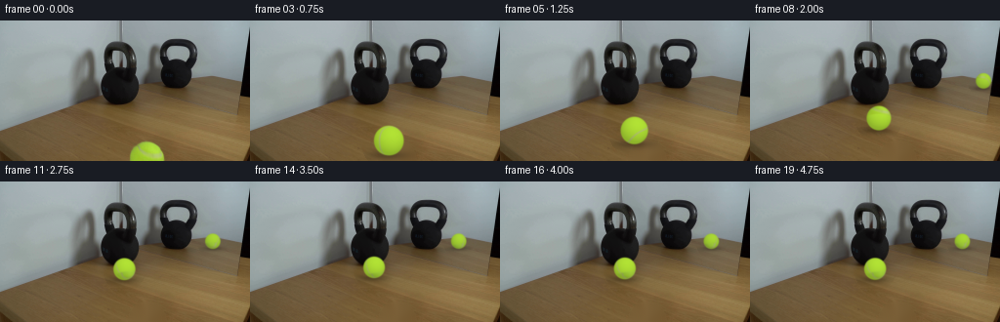
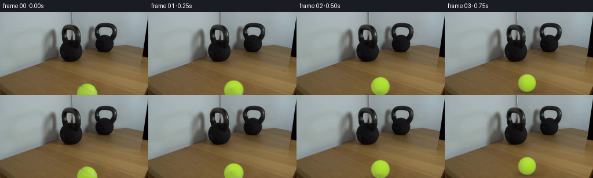
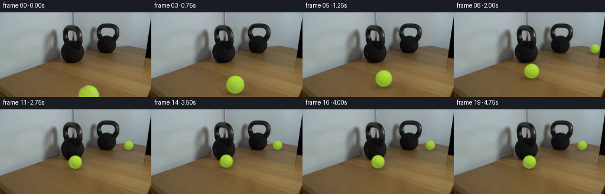
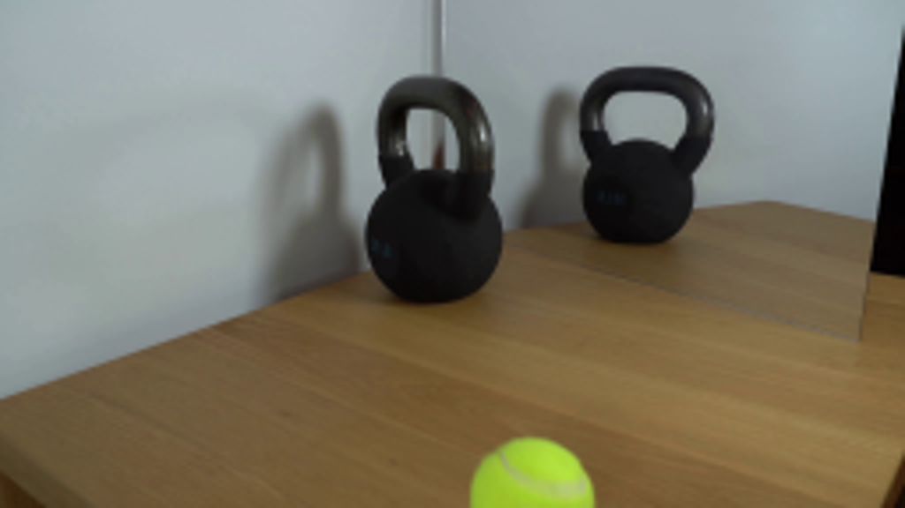
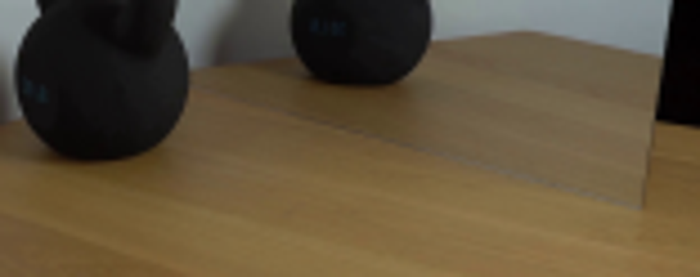
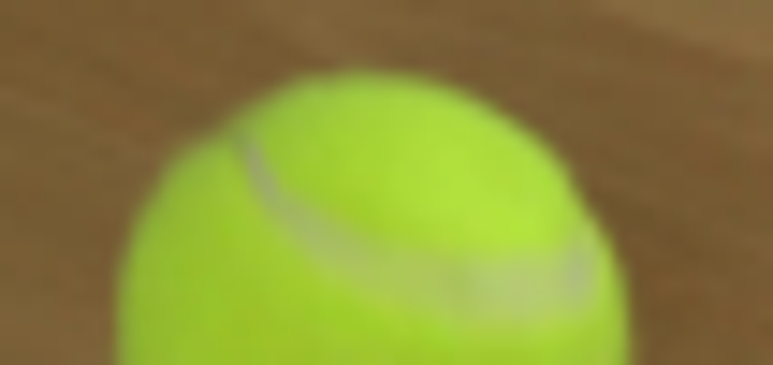
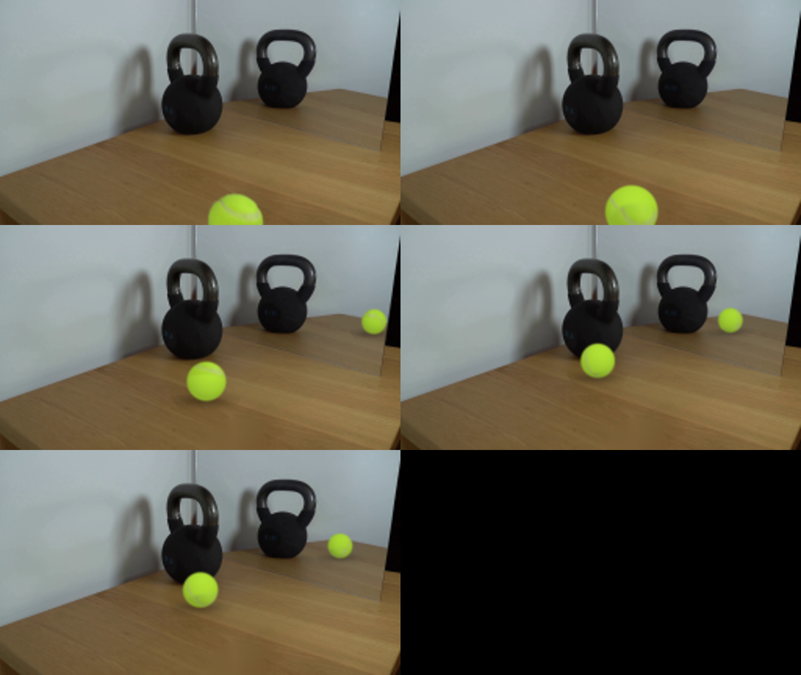

CODING AGENTS AS PIXEL WORLD MODELS
traex/GPT-6.1-Sol · 0155
点击播放 · 原生 RGB 像素
逐轮保存的候选
回放视频、检查图与代码变化。
每份候选均可单独播放。实际图片检查记录在下方工具轨迹中。
候选 01播放与检查图
点击播放 · 原生 RGB 像素


展开代码变化
--- 上一保存版本
+++ 本次保存版本
@@ -0,0 +1,152 @@
+from pathlib import Path
+import numpy as np
+import cv2
+from PIL import Image
+import artifact_io
+
+ROOT=Path(__file__).resolve().parent
+source=np.array(Image.open(ROOT/'first_frame.png').convert('RGB'))
+H,W=source.shape[:2]
+yy,xx=np.mgrid[:H,:W]
+# Remove only the ball from the photographed, unchanging scene.
+c0=np.array([150.4,142.1]); r0=17.65
+mask=((xx-c0[0])**2+(yy-c0[1])**2<(r0+2.1)**2).astype(np.uint8)*255
+mask[yy<122]=0
+plate=cv2.inpaint(source,mask,5,cv2.INPAINT_TELEA)
+Image.fromarray(plate).save(ROOT/'.tmp/plate.png')
+
+# Reflection in the upright mirror, expressed on the tabletop.
+line=np.array([-.245,1.,-37.5])
+p=np.array([124.,85.,1.]); q=np.array([181.,68.,1.])
+k=-(line@p)/(line@q)
+van=p-k*q
+mirror=np.eye(3)-2*np.outer(van,line)/(line@van)
+
+S=4
+Y,X=np.mgrid[:H*S,:W*S].astype(float)
+X=(X+.5)/S-.5; Y=(Y+.5)/S-.5
+background=cv2.resize(plate.astype(float),(W*S,H*S),interpolation=cv2.INTER_CUBIC)
+# Local geometric mirror aperture. The foreground object remains opaque.
+mirror_aperture=(X>123.1)&(X<255.6-.122*Y)&(Y<.245*X+37.5)
+
+rng=np.random.default_rng(415)
+noise=rng.normal(0,1,(192,384)).astype(np.float32)
+noise=cv2.GaussianBlur(noise,(0,0),.48)
+
+axis=np.array([-.978,.205,.022]); axis/=np.linalg.norm(axis)
+light=np.array([.25,-.55,.797]);light/=np.linalg.norm(light)
+
+def rotation(a):
+ x,y,z=axis
+ K=np.array([[0,-z,y],[z,0,-x],[-y,x,0]])
+ return np.eye(3)+np.sin(a)*K+(1-np.cos(a))*(K@K)
+
+# These are surface albedo values, under soft overhead daylight.
+def shade(norm):
+ d=norm@light
+ return .80+.20*np.clip(d,0,1)
+
+def ball_layer(cx,cy,rad,angle,reflect=False):
+ nx=(X-cx)/rad;ny=(Y-cy)/rad
+ rho=nx*nx+ny*ny
+ nz=np.sqrt(np.maximum(0,1-rho))
+ n=np.stack((nx,ny,nz),axis=-1)
+ if reflect:
+ # The mirror views the same rolling sphere from its other side.
+ B=np.array([[.61,0,-.792],[0,1,0],[.792,0,.61]])
+ local=n@B@rotation(angle)
+ else:
+ local=n@rotation(angle)
+ lx,ly,lz=local[...,0],local[...,1],local[...,2]
+ # The pale, recessed curved seam and fine felt surface.
+ seam=ly+.45*lz-.4*lx+.5*lx*lx
+ # Normalizing the implicit surface supplies an approximately constant seam width.
+ grad=np.sqrt(1+.45**2+(-.4+lx)**2)
+ seam_distance=np.abs(seam)/grad
+ seam_mix=np.exp(-.5*(seam_distance/.034)**2)
+ tex_x=((np.arctan2(lz,lx)+np.pi)/(2*np.pi)*383).astype(np.float32)
+ tex_y=(np.arccos(np.clip(ly,-1,1))/np.pi*191).astype(np.float32)
+ fuzz=cv2.remap(noise,tex_x,tex_y,cv2.INTER_LINEAR,borderMode=cv2.BORDER_WRAP)
+ surf=np.array([178.,226.,53.])[None,None,:]*(1-seam_mix[...,None])+np.array([183.,190.,132.])[None,None,:]*seam_mix[...,None]
+ surf+=fuzz[...,None]*2.2
+ rgb=surf*shade(n)[...,None]
+ # Reuse the actual visible felt texture on the corresponding hemisphere.
+ # The remaining hemisphere is continued by the analytic, non-learned texture.
+ old_x=(c0[0]+r0*lx).astype(np.float32)
+ old_y=(c0[1]+r0*ly).astype(np.float32)
+ sampled=cv2.remap(source.astype(np.float32),old_x,old_y,cv2.INTER_LINEAR,borderMode=cv2.BORDER_REPLICATE)
+ known=(np.clip((lz-.32)/.16,0,1)*np.clip((142.9-old_y)/1.0,0,1)*np.clip((old_y-124.9)/.9,0,1))
+ old_shade=shade(local)
+ sampled=sampled*shade(n)[...,None]/np.maximum(old_shade[...,None],.1)
+ rgb=rgb*(1-known[...,None])+sampled*known[...,None]
+ if reflect:
+ rgb=rgb*np.array([.94,.95,.94])+np.array([2.,2.,2.])
+ edge=np.clip((1-np.sqrt(rho))*rad*S+.5,0,1)
+ if reflect:edge*=mirror_aperture
+ # Soft photographed focus and rounded silhouettes.
+ premul=cv2.GaussianBlur((rgb*edge[...,None]).astype(np.float32),(0,0),.46*S)
+ alpha=cv2.GaussianBlur(edge.astype(np.float32),(0,0),.46*S)
+ if reflect:
+ premul*=mirror_aperture[...,None];alpha*=mirror_aperture
+ return premul,alpha
+
+horizon=-4.0
+start_ground=142.1+17.65
+stop_ground=96.0
+stop_x=125.1
+contact_time=3.1
+# Ground depth changes by constant real world speed. Perspective then makes
+# the farther rolling ball gradually smaller, not artificially accelerating.
+inv_start=1/(start_ground-horizon); inv_stop=1/(stop_ground-horizon)
+# Purely elastic motion is not expected against a 30 lb iron mass: the ball
+# softly rebounds, then rolling friction arrests it; the kettlebell stays still.
+def motion(t):
+ if t<=contact_time:
+ z=1/(inv_start+(inv_stop-inv_start)*t/contact_time)
+ ground=z+horizon
+ fraction=(start_ground-ground)/(start_ground-stop_ground)
+ x=c0[0]+(stop_x-c0[0])*fraction
+ travel=(np.log((start_ground-horizon)/(ground-horizon))/.1062)/.55
+ else:
+ dt=t-contact_time
+ recoil=4.4*(1-np.exp(-dt/0.46))
+ ground=stop_ground+recoil
+ fraction=(start_ground-ground)/(start_ground-stop_ground)
+ x=c0[0]+(stop_x-c0[0])*fraction+.9*(1-np.exp(-dt/.5))
+ travel=(np.log((start_ground-horizon)/(stop_ground-horizon))/.1062)/.55-recoil/(10.65*.55)
+ rad=r0*(ground-horizon)/(start_ground-horizon)
+ return x,ground,rad,travel
+
+frames=[source.copy()]
+for i in range(1,20):
+ t=i/4
+ cx,ground,rad,ang=motion(t)
+ cy=ground-rad
+ frame=background.copy()
+ # Reflection: project the ground point, then raise the centre by its radius.
+ reflected=mirror@np.array([cx,ground,1.])
+ rx,rg=reflected[:2]/reflected[2]
+ rr=rad/reflected[2]
+ ry=rg-rr
+ # Soft contact shadows, reflected together with the moving object.
+ for sx,sy,sr,is_mirror in [(rx,rg,rr,True),(cx,ground,rad,False)]:
+ # A tight contact ellipse and a faint broad shadow toward the left.
+ shadow=.19*np.exp(-.5*(((X-sx)/(sr*.83))**2+((Y-(sy-.2))/(sr*.20))**2))
+ shadow+=.10*np.exp(-.5*(((X-(sx-sr*.37))/(sr*1.14))**2+((Y-(sy-.1))/(sr*.29))**2))
+ if is_mirror:shadow*=mirror_aperture
+ frame*=1-shadow[...,None]
+ pm,am=ball_layer(rx,ry,rr,ang,True)
+ frame=frame*(1-am[...,None])+pm
+ pm,am=ball_layer(cx,cy,rad,ang)
+ frame=frame*(1-am[...,None])+pm
+ out=cv2.resize(frame,(W,H),interpolation=cv2.INTER_AREA)
+ # Preserve photographed pixels away from the moving elements, without
+ # introducing any artificial camera motion or temporal exposure changes.
+ active=((xx-c0[0])**2+(yy-c0[1])**2<(r0+3)**2)
+ active|=((xx-cx)**2/(rad*1.7+3)**2+(yy-cy)**2/(rad*1.8+3)**2<1)
+ active|=(((xx-rx)**2/(rr*1.7+3)**2+(yy-ry)**2/(rr*1.8+3)**2)<1)&(yy<.245*xx+39.5)
+ out=np.clip(np.rint(out),0,255).astype(np.uint8)
+ out[~active]=source[~active]
+ frames.append(out)
+frames=np.stack(frames)
+artifact_io.save(frames,ROOT)
候选 02播放与检查图
点击播放 · 原生 RGB 像素

展开代码变化
--- 上一保存版本
+++ 本次保存版本
@@ -34,7 +34,7 @@
noise=cv2.GaussianBlur(noise,(0,0),.48)
axis=np.array([-.978,.205,.022]); axis/=np.linalg.norm(axis)
-light=np.array([.25,-.55,.797]);light/=np.linalg.norm(light)
+light=np.array([.40,-.70,.595]);light/=np.linalg.norm(light)
def rotation(a):
x,y,z=axis
@@ -44,7 +44,7 @@
# These are surface albedo values, under soft overhead daylight.
def shade(norm):
d=norm@light
- return .80+.20*np.clip(d,0,1)
+ return .75+.25*np.clip(d,0,1)
def ball_layer(cx,cy,rad,angle,reflect=False):
nx=(X-cx)/rad;ny=(Y-cy)/rad
@@ -59,11 +59,11 @@
local=n@rotation(angle)
lx,ly,lz=local[...,0],local[...,1],local[...,2]
# The pale, recessed curved seam and fine felt surface.
- seam=ly+.45*lz-.4*lx+.5*lx*lx
+ seam=ly-.14*lz-.383*lx+.420*lx*lx+.426
# Normalizing the implicit surface supplies an approximately constant seam width.
- grad=np.sqrt(1+.45**2+(-.4+lx)**2)
+ grad=np.sqrt(1+.14**2+(-.383+.84*lx)**2)
seam_distance=np.abs(seam)/grad
- seam_mix=np.exp(-.5*(seam_distance/.034)**2)
+ seam_mix=np.exp(-.5*(seam_distance/.045)**2)
tex_x=((np.arctan2(lz,lx)+np.pi)/(2*np.pi)*383).astype(np.float32)
tex_y=(np.arccos(np.clip(ly,-1,1))/np.pi*191).astype(np.float32)
fuzz=cv2.remap(noise,tex_x,tex_y,cv2.INTER_LINEAR,borderMode=cv2.BORDER_WRAP)
可观测工具轨迹
实际执行的命令与返回图片。
命令 1exit 0
/bin/bash -lc 'ls -la && cat prompt.txt && cat GENERATION_RULES.md'
命令 2exit 0
/bin/bash -lc "cat artifact_io.py && python - <<'PY'
from PIL import Image
im=Image.open('first_frame.png'); print(im.size); im.resize((1024,576)).save('.tmp/first_large.png')
PY"命令 3exit 0
/bin/bash -lc "python - <<'PY'
from PIL import Image
im=Image.open('first_frame.png'); im.crop((100,50,256,112)).resize((1248,496)).save('.tmp/crop.png')
PY"命令 4exit 0
/bin/bash -lc "python - <<'PY'
import numpy as np
l=np.array([-.245,1,-37.5]); r=np.array([124,85,1]); m=np.array([181,68,1]); k=-(l@r)/(l@m); v=r-k*m; H=np.eye(3)-2*np.outer(v,l)/(l@v)
print('k',k,'v',v/v[2], 'H',H)
for p in [(150,160),(148,140),(145,120),(140,105),(135,99),(124,85)]:
q=H@[*p,1]; print(p,q[:2]/q[2],1/q[2])
PY"命令 5exit 0
/bin/bash -lc "python - <<'PY'
from PIL import Image
im=Image.open('first_frame.png'); im.crop((125,119,178,144)).resize((848,400)).save('.tmp/ball.png')
import cv2; print(cv2.__version__)
PY"命令 6exit 0
/bin/bash -lc "python - <<'PY' import numpy as np for a,b in [(.2,47),(.22,42.3),(.245,37.5)]: l=np.array([-a,1,-b]); r=np.array([124,85,1]); m=np.array([181,68,1]); k=-(l@r)/(l@m);v=r-k*m; H=np.eye(3)-2*np.outer(v,l)/(l@v);print(a,b,'k',k,'v',v/v[2]) for p in [(150,159),(138,126),(131,104),(130,101)]: q=H@[*p,1];print(p,q[:2]/q[2],1/q[2]) PY"
命令 7exit 0
/bin/bash -lc "python - <<'PY'
import numpy as np
from PIL import Image
im=np.array(Image.open('first_frame.png'))
for p in [(151,126),(151,130),(151,134),(150,140),(140,137),(164,140),(158,129),(136,141)]:
x,y=p; print(p,im[y,x])
PY"命令 8exit 0
/bin/bash -lc "cat > generate.py <<'PY'
from pathlib import Path
import numpy as np
import cv2
from PIL import Image
import artifact_io
ROOT=Path(__file__).resolve().parent
source=np.array(Image.open(ROOT/'first_frame.png').convert('RGB'))
H,W=source.shape[:2]
yy,xx=np.mgrid[:H,:W]
# Remove only the ball from the photographed, unchanging scene.
c0=np.array([150.4,142.1]); r0=17.65
mask=((xx-c0[0])**2+(yy-c0[1])**2<(r0+2.1)**2).astype(np.uint8)*255
mask[yy<122]=0
plate=cv2.inpaint(source,mask,5,cv2.INPAINT_TELEA)
Image.fromarray(plate).save(ROOT/'.tmp/plate.png')
# Reflection in the upright mirror, expressed on the tabletop.
line=np.array([-.245,1.,-37.5])
p=np.array([124.,85.,1.]); q=np.array([181.,68.,1.])
k=-(line@p)/(line@q)
van=p-k*q
mirror=np.eye(3)-2*np.outer(van,line)/(line@van)
S=4
Y,X=np.mgrid[:H*S,:W*S].astype(float)
X=(X+.5)/S-.5; Y=(Y+.5)/S-.5
background=cv2.resize(plate.astype(float),(W*S,H*S),interpolation=cv2.INTER_CUBIC)
# Local geometric mirror aperture. The foreground object remains opaque.
mirror_aperture=(X>123.1)&(X<255.6-.122*Y)&(Y<.245*X+37.5)
rng=np.random.default_rng(415)
noise=rng.normal(0,1,(192,384)).astype(np.float32)
noise=cv2.GaussianBlur(noise,(0,0),.48)
axis=np.array([-.978,.205,.022]); axis/=np.linalg.norm(axis)
light=np.array([.25,-.55,.797]);light/=np.linalg.norm(light)
def rotation(a):
x,y,z=axis
K=np.array([[0,-z,y],[z,0,-x],[-y,x,0]])
return np.eye(3)+np.sin(a)*K+(1-np.cos(a))*(K@K)
# These are surface albedo values, under soft overhead daylight.
def shade(norm):
d=norm@light
return .80+.20*np.clip(d,0,1)
def ball_layer(cx,cy,rad,angle,reflect=False):
nx=(X-cx)/rad;ny=(Y-cy)/rad
rho=nx*nx+ny*ny
nz=np.sqrt(np.maximum(0,1-rho))
n=np.stack((nx,ny,nz),axis=-1)
if reflect:
# The mirror views the same rolling sphere from its other side.
B=np.array([[.61,0,-.792],[0,1,0],[.792,0,.61]])
local=n@B@rotation(angle)
else:
local=n@rotation(angle)
lx,ly,lz=local[...,0],local[...,1],local[...,2]
# The pale, recessed curved seam and fine felt surface.
seam=ly+.45*lz-.4*lx+.5*lx*lx
# Normalizing the implicit surface supplies an approximately constant seam width.
grad=np.sqrt(1+.45**2+(-.4+lx)**2)
seam_distance=np.abs(seam)/grad
seam_mix=np.exp(-.5*(seam_distance/.034)**2)
tex_x=((np.arctan2(lz,lx)+np.pi)/(2*np.pi)*383).astype(np.float32)
tex_y=(np.arccos(np.clip(ly,-1,1))/np.pi*191).astype(np.float32)
fuzz=cv2.remap(noise,tex_x,tex_y,cv2.INTER_LINEAR,borderMode=cv2.BORDER_WRAP)
surf=np.array([178.,226.,53.])[None,None,:]*(1-seam_mix[...,None])+np.array([183.,190.,132.])[None,None,:]*seam_mix[...,None]
surf+=fuzz[...,None]*2.2
rgb=surf*shade(n)[...,None]
# Reuse the actual visible felt texture on the corresponding hemisphere.
# The remaining hemisphere is continued by the analytic, non-learned texture.
old_x=(c0[0]+r0*lx).astype(np.float32)
old_y=(c0[1]+r0*ly).astype(np.float32)
sampled=cv2.remap(source.astype(np.float32),old_x,old_y,cv2.INTER_LINEAR,borderMode=cv2.BORDER_REPLICATE)
known=(np.clip((lz-.32)/.16,0,1)*np.clip((142.9-old_y)/1.0,0,1)*np.clip((old_y-124.9)/.9,0,1))
old_shade=shade(local)
sampled=sampled*shade(n)[...,None]/np.maximum(old_shade[...,None],.1)
rgb=rgb*(1-known[...,None])+sampled*known[...,None]
if reflect:
rgb=rgb*np.array([.94,.95,.94])+np.array([2.,2.,2.])
edge=np.clip((1-np.sqrt(rho))*rad*S+.5,0,1)
if reflect:edge*=mirror_aperture
# Soft photographed focus and rounded silhouettes.
premul=cv2.GaussianBlur((rgb*edge[...,None]).astype(np.float32),(0,0),.46*S)
alpha=cv2.GaussianBlur(edge.astype(np.float32),(0,0),.46*S)
if reflect:
premul*=mirror_aperture[...,None];alpha*=mirror_aperture
return premul,alpha
horizon=-4.0
start_ground=142.1+17.65
stop_ground=96.0
stop_x=125.1
contact_time=3.1
# Ground depth changes by constant real world speed. Perspective then makes
# the farther rolling ball gradually smaller, not artificially accelerating.
inv_start=1/(start_ground-horizon); inv_stop=1/(stop_ground-horizon)
# Purely elastic motion is not expected against a 30 lb iron mass: the ball
# softly rebounds, then rolling friction arrests it; the kettlebell stays still.
def motion(t):
if t<=contact_time:
z=1/(inv_start+(inv_stop-inv_start)*t/contact_time)
ground=z+horizon
fraction=(start_ground-ground)/(start_ground-stop_ground)
x=c0[0]+(stop_x-c0[0])*fraction
travel=(np.log((start_ground-horizon)/(ground-horizon))/.1062)/.55
else:
dt=t-contact_time
recoil=4.4*(1-np.exp(-dt/0.46))
ground=stop_ground+recoil
fraction=(start_ground-ground)/(start_ground-stop_ground)
x=c0[0]+(stop_x-c0[0])*fraction+.9*(1-np.exp(-dt/.5))
travel=(np.log((start_ground-horizon)/(stop_ground-horizon))/.1062)/.55-recoil/(10.65*.55)
rad=r0*(ground-horizon)/(start_ground-horizon)
return x,ground,rad,travel
frames=[source.copy()]
for i in range(1,20):
t=i/4
cx,ground,rad,ang=motion(t)
cy=ground-rad
frame=background.copy()
# Reflection: project the ground point, then raise the centre by its radius.
reflected=mirror@np.array([cx,ground,1.])
rx,rg=reflected[:2]/reflected[2]
rr=rad/reflected[2]
ry=rg-rr
# Soft contact shadows, reflected together with the moving object.
for sx,sy,sr,is_mirror in [(rx,rg,rr,True),(cx,ground,rad,False)]:
# A tight contact ellipse and a faint broad shadow toward the left.
shadow=.19*np.exp(-.5*(((X-sx)/(sr*.83))**2+((Y-(sy-.2))/(sr*.20))**2))
shadow+=.10*np.exp(-.5*(((X-(sx-sr*.37))/(sr*1.14))**2+((Y-(sy-.1))/(sr*.29))**2))
if is_mirror:shadow*=mirror_aperture
frame*=1-shadow[...,None]
pm,am=ball_layer(rx,ry,rr,ang,True)
frame=frame*(1-am[...,None])+pm
pm,am=ball_layer(cx,cy,rad,ang)
frame=frame*(1-am[...,None])+pm
out=cv2.resize(frame,(W,H),interpolation=cv2.INTER_AREA)
# Preserve photographed pixels away from the moving elements, without
# introducing any artificial camera motion or temporal exposure changes.
active=((xx-c0[0])**2+(yy-c0[1])**2<(r0+3)**2)
active|=((xx-cx)**2/(rad*1.7+3)**2+(yy-cy)**2/(rad*1.8+3)**2<1)
active|=(((xx-rx)**2/(rr*1.7+3)**2+(yy-ry)**2/(rr*1.8+3)**2)<1)&(yy<.245*xx+39.5)
out=np.clip(np.rint(out),0,255).astype(np.uint8)
out[~active]=source[~active]
frames.append(out)
frames=np.stack(frames)
artifact_io.save(frames,ROOT)
PY
python generate.py"命令 9exit 0
/bin/bash -lc "python - <<'PY'
from PIL import Image
ims=[Image.open('frames/%02d.png'%i).resize((768,432)) for i in [0,1,8,12,19]]
out=Image.new('RGB',(768*2,432*3))
for j,im in enumerate(ims):out.paste(im,((j%2)*768,j//2*432))
out.save('.tmp/detail.png')
PY"命令 10exit 0
/bin/bash -lc "python - <<'PY'
import numpy as np
from PIL import Image
im=np.array(Image.open('first_frame.png'))
for x in [139,141,144,147,151,155,160,164]:
print(x,[(y,tuple(im[y,x])) for y in range(127,144,2)])
PY"命令 11exit 0
/bin/bash -lc "python - <<'PY' import numpy as np pts=np.array([[140,128.7],[144,133],[147,135.3],[151,137.2],[155,138.1],[160,138],[164,136.8]]) nxy=(pts-[150.4,142.1])/17.65;nz=np.sqrt(1-np.sum(nxy*nxy,axis=1));x=nxy[:,0];y=nxy[:,1] A=np.stack([nz,x,x*x,np.ones(7)],axis=-1);print(np.linalg.lstsq(A,-y,rcond=None)); PY"
命令 12exit 0
/bin/bash -lc "python - <<'PY'
p='generate.py'
s=open(p).read().replace('light=np.array([.25,-.55,.797])','light=np.array([.40,-.70,.595])').replace('return .80+.20*np.clip(d,0,1)','return .75+.25*np.clip(d,0,1)').replace('seam=ly+.45*lz-.4*lx+.5*lx*lx','seam=ly-.14*lz-.383*lx+.420*lx*lx+.426').replace('grad=np.sqrt(1+.45**2+(-.4+lx)**2)','grad=np.sqrt(1+.14**2+(-.383+.84*lx)**2)').replace('seam_distance/.034','seam_distance/.045')
open(p,'w').write(s)
PY
python generate.py"命令 13exit 1
/bin/bash -lc "command -v ffmpeg && ffmpeg -loglevel error -y -framerate 4 -i frames/%02d.png -c:v libx264 -crf 16 -pix_fmt yuv420p -r 4 video.mp4 && python - <<'PY'
import numpy as np
from PIL import Image
p=np.load('pixels.npz')['pixels'];print(p.shape)
a=np.array(Image.open('frames/00.png'));b=np.array(Image.open('first_frame.png'));print('Frame 00 exact:',np.array_equal(a,b))
PY"命令 14exit 0
/bin/bash -lc "python - <<'PY'
import numpy as np
from PIL import Image
p=np.load('pixels.npz')['pixels'];print('Packed video:',p.shape)
a=np.array(Image.open('frames/00.png'));b=np.array(Image.open('first_frame.png'));print('Frame 00 exact:',np.array_equal(a,b)); print('RGB frames:',len(list(__import__('pathlib').Path('frames').glob('*.png'))))
PY"视觉工具实际返回图片 1

视觉工具实际返回图片 2

视觉工具实际返回图片 3

视觉工具实际返回图片 4

视觉工具实际返回图片 5

视觉工具实际返回图片 6

保存候选 2 份；完成命令 14 次；可验证图片返回 6 张。原始 API 响应与完整日志保留在本地。